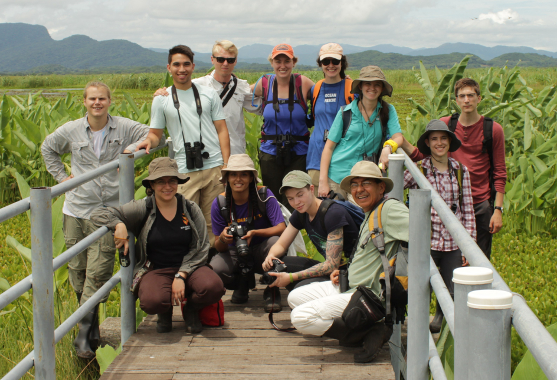

Teaching Philosophy and Experiences
To better understand and conserve wild life on Earth, we must engender interest and demonstrate intrinsic value of the natural world to future generations, and the only way to do this is by teaching. By fostering a strong conservation ethic through education, I believe that teaching is one of my strongest tools to not only help better understand biodiversity on Earth, but also to conserve it. One avenue I have worked to accomplish these goals is by teaching students at the collegiate level. To this end, I have taught lecture and laboratory courses aimed to engage and educate students in three topics to date:
Tropical Ecology

In 2017, I worked as a Resident Professor for the Organization for Tropical Studies in Costa Rica, where I co-taught an undergraduate study-abroad course in tropical ecology. The course – Tropical Biology on a Changing Planet – was offered through Organization for Tropical Studies and accredited by Duke University. During a semester, the students and faculty visited six tropical forest biomes in Costa Rica and Panama, during which they become experts in ecology, environmental policy, and research methods in the diverse tropical ecosystems. They also become proficient in Spanish language and Costa Rican culture through classes at the Costa Rican Language Academy and by hanging out with all the great Costa Ricans at the field sites. Please contact me if you are interested in studying tropical biology in Costa Rica.
Vertebrate Ecology and Herpetology

I have taught laboratory and field courses in both Vertebrate Biodiversity and Herpetology at Auburn University. Courses introduced students to natural history, diversity, taxonomy, and anatomy of vertebrates in the southeastern United States, but herpetology provided an exhaustive focus strictly on amphibians and reptiles. Both courses included extensive field components with numerous field trips, including weekend-long experiences. The courses concluded with students conducting independent or group research projects on a species of interest, and students gave presentations on the projects.
See below for brief teaching examples from Tropical Ecology in Costa Rica!